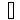
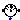
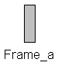
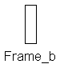
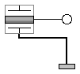
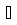
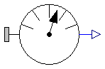
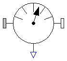
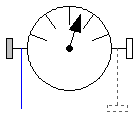

This package contains connectors and partial models (i.e. models that are only used to build other models) of the MultiBody library.
| Name | Description |
|---|---|
| Coordinate system fixed to the component with one cut-force and cut-torque (no icon) | |
| Coordinate system fixed to the component with one cut-force and cut-torque (filled rectangular icon) | |
|  Frame_b | Coordinate system fixed to the component with one cut-force and cut-torque (non-filled rectangular icon) |
| Coordinate system fixed to the component used to express in which coordinate system a vector is resolved (non-filled rectangular icon) | |
| Connector consisting of 1-dim. rotational flange and its bearing frame | |
| Adaptor to allow direct connections to the sub-connectors of FlangeWithBearing | |
| Base model for components providing two frame connectors + outer world + assert to guarantee that the component is connected | |
| Base model for components providing two frame connectors + outer world + assert to guarantee that the component is connected (default icon size is factor 2 larger as usual) | |
| Base model for components providing one frame_a connector + outer world + assert to guarantee that the component is connected | |
| Base model for components providing one frame_b connector + outer world + assert to guarantee that the component is connected | |
| Base model for elementary joints (has two frames + outer world + assert to guarantee that the joint is connected) | |
| Base model for force elements (provide frame_b.f and frame_b.t in subclasses) | |
| Base model for line force elements | |
| Base model to measure an absolute frame variable | |
|  PartialRelativeSensor | Base model to measure a relative variable between two frames |
| PartialCutForceSensor | Base model to measure the cut force and/or torque between two frames |
| Base model for visualizers (has a frame_a on the left side + outer world + assert to guarantee that the component is connected) |
Basic definition of a coordinate system that is fixed to a mechanical component. In the origin of the coordinate system the cut-force and the cut-torque is acting. This component has no icon definition and is only used by inheritance from frame connectors to define different icons.
| Type | Name | Description |
|---|---|---|
| Position | r_0[3] | Position vector from world frame to the connector frame origin, resolved in world frame [m] |
| Orientation | R | Orientation object to rotate the world frame into the connector frame |
| flow Force | f[3] | Cut-force resolved in connector frame [N] |
| flow Torque | t[3] | Cut-torque resolved in connector frame [N.m] |
connector Frame
"Coordinate system fixed to the component with one cut-force and cut-torque (no icon)"
import SI = Modelica.SIunits;
SI.Position r_0[3]
"Position vector from world frame to the connector frame origin, resolved in world frame";
Frames.Orientation R
"Orientation object to rotate the world frame into the connector frame";
flow SI.Force f[3] "Cut-force resolved in connector frame";
flow SI.Torque t[3] "Cut-torque resolved in connector frame";
end Frame;
 Modelica.Mechanics.MultiBody.Interfaces.Frame_a
Modelica.Mechanics.MultiBody.Interfaces.Frame_a
Basic definition of a coordinate system that is fixed to a mechanical component. In the origin of the coordinate system the cut-force and the cut-torque is acting. This component has a filled rectangular icon.
| Type | Name | Description |
|---|---|---|
| Position | r_0[3] | Position vector from world frame to the connector frame origin, resolved in world frame [m] |
| Orientation | R | Orientation object to rotate the world frame into the connector frame |
| flow Force | f[3] | Cut-force resolved in connector frame [N] |
| flow Torque | t[3] | Cut-torque resolved in connector frame [N.m] |
connector Frame_a "Coordinate system fixed to the component with one cut-force and cut-torque (filled rectangular icon)" extends Frame; end Frame_a;
 Modelica.Mechanics.MultiBody.Interfaces.Frame_b
Modelica.Mechanics.MultiBody.Interfaces.Frame_b
Basic definition of a coordinate system that is fixed to a mechanical component. In the origin of the coordinate system the cut-force and the cut-torque is acting. This component has a non-filled rectangular icon.
| Type | Name | Description |
|---|---|---|
| Position | r_0[3] | Position vector from world frame to the connector frame origin, resolved in world frame [m] |
| Orientation | R | Orientation object to rotate the world frame into the connector frame |
| flow Force | f[3] | Cut-force resolved in connector frame [N] |
| flow Torque | t[3] | Cut-torque resolved in connector frame [N.m] |
connector Frame_b "Coordinate system fixed to the component with one cut-force and cut-torque (non-filled rectangular icon)" extends Frame; end Frame_b;
 Modelica.Mechanics.MultiBody.Interfaces.Frame_resolve
Modelica.Mechanics.MultiBody.Interfaces.Frame_resolve

Basic definition of a coordinate system that is fixed to a mechanical component. In the origin of the coordinate system the cut-force and the cut-torque is acting. This coordinate system is used to express in which coordinate system a vector is resolved. A component that uses a Frame_resolve connector has to set the cut-force and cut-torque of this frame to zero. When connecting from a Frame_resolve connector to another frame connector, by default the connecting line has line style "dotted". This component has a non-filled rectangular icon.
| Type | Name | Description |
|---|---|---|
| Position | r_0[3] | Position vector from world frame to the connector frame origin, resolved in world frame [m] |
| Orientation | R | Orientation object to rotate the world frame into the connector frame |
| flow Force | f[3] | Cut-force resolved in connector frame [N] |
| flow Torque | t[3] | Cut-torque resolved in connector frame [N.m] |
connector Frame_resolve "Coordinate system fixed to the component used to express in which coordinate system a vector is resolved (non-filled rectangular icon)" extends Frame; end Frame_resolve;
 Modelica.Mechanics.MultiBody.Interfaces.FlangeWithBearing
Modelica.Mechanics.MultiBody.Interfaces.FlangeWithBearing

This hierarchical connector models a 1-dim. rotational flange connector and its optional bearing defined by a 3-dim. frame connector. If a connection to the subconnectors should be clearly visible, connect first an instance of FlangeWithBearingAdaptor to the FlangeWithBearing connector.
| Type | Name | Default | Description |
|---|---|---|---|
| Boolean | includeBearingConnector | false | = true, if bearing frame connector is present, otherwise not present |
| Type | Name | Description |
|---|---|---|
| Boolean | includeBearingConnector | = true, if bearing frame connector is present, otherwise not present |
| Flange_a | flange | 1-dim. rotational flange |
| Frame | bearingFrame | 3-dim. frame in which the 1-dim. shaft is mounted |
connector FlangeWithBearing
"Connector consisting of 1-dim. rotational flange and its bearing frame"
parameter Boolean includeBearingConnector=false
"= true, if bearing frame connector is present, otherwise not present";
Modelica.Mechanics.Rotational.Interfaces.Flange_a flange
"1-dim. rotational flange";
Modelica.Mechanics.MultiBody.Interfaces.Frame bearingFrame if
includeBearingConnector "3-dim. frame in which the 1-dim. shaft is mounted";
end FlangeWithBearing;
 Modelica.Mechanics.MultiBody.Interfaces.FlangeWithBearingAdaptor
Modelica.Mechanics.MultiBody.Interfaces.FlangeWithBearingAdaptor
Adaptor object to make a more visible connection to the flange and frame subconnectors of a FlangeWithBearing connector.
| Type | Name | Default | Description |
|---|---|---|---|
| Boolean | includeBearingConnector | false | = true, if bearing frame connector is present, otherwise not present |
| Type | Name | Description |
|---|---|---|
| FlangeWithBearing | flangeAndFrame | Compound connector consisting of 1-dim. rotational flange and 3-dim. frame mounting |
| Flange_b | flange | 1-dim. rotational flange |
| Frame_a | frame | 3-dim. frame in which the 1-dim. shaft is mounted |
model FlangeWithBearingAdaptor
"Adaptor to allow direct connections to the sub-connectors of FlangeWithBearing"
parameter Boolean includeBearingConnector=false
"= true, if bearing frame connector is present, otherwise not present";
Modelica.Mechanics.MultiBody.Interfaces.FlangeWithBearing flangeAndFrame(
includeBearingConnector=includeBearingConnector)
"Compound connector consisting of 1-dim. rotational flange and 3-dim. frame mounting";
Modelica.Mechanics.Rotational.Interfaces.Flange_b flange
"1-dim. rotational flange";
Frame_a frame if includeBearingConnector
"3-dim. frame in which the 1-dim. shaft is mounted";
equation
connect(flange, flangeAndFrame.flange);
connect(frame, flangeAndFrame.bearingFrame);
end FlangeWithBearingAdaptor;
 Modelica.Mechanics.MultiBody.Interfaces.PartialTwoFrames
Modelica.Mechanics.MultiBody.Interfaces.PartialTwoFrames
This partial model provides two frame connectors, access to the world object and an assert to check that both frame connectors are connected. Therefore, inherit from this partial model if the two frame connectors are needed and if the two frame connectors should be connected for a correct model.
| Type | Name | Description |
|---|---|---|
| Frame_a | frame_a | Coordinate system fixed to the component with one cut-force and cut-torque |
| Frame_b | frame_b | Coordinate system fixed to the component with one cut-force and cut-torque |
partial model PartialTwoFrames
"Base model for components providing two frame connectors + outer world + assert to guarantee that the component is connected"
Interfaces.Frame_a frame_a
"Coordinate system fixed to the component with one cut-force and cut-torque";
Interfaces.Frame_b frame_b
"Coordinate system fixed to the component with one cut-force and cut-torque";
protected
outer Modelica.Mechanics.MultiBody.World world;
equation
assert(cardinality(frame_a) > 0,
"Connector frame_a of component is not connected");
assert(cardinality(frame_b) > 0,
"Connector frame_b of component is not connected");
end PartialTwoFrames;
 Modelica.Mechanics.MultiBody.Interfaces.PartialTwoFramesDoubleSize
Modelica.Mechanics.MultiBody.Interfaces.PartialTwoFramesDoubleSize
This partial model provides two frame connectors, access to the world object and an assert to check that both frame connectors are connected. Therefore, inherit from this partial model if the two frame connectors are needed and if the two frame connectors should be connected for a correct model.
When dragging "PartialTwoFrames", the default size is a factor of two larger as usual. This partial model is used by the Joint.Assemblies joint aggregation models.
| Type | Name | Description |
|---|---|---|
| Frame_a | frame_a | Coordinate system fixed to the component with one cut-force and cut-torque |
| Frame_b | frame_b | Coordinate system fixed to the component with one cut-force and cut-torque |
partial model PartialTwoFramesDoubleSize
"Base model for components providing two frame connectors + outer world + assert to guarantee that the component is connected (default icon size is factor 2 larger as usual)"
Interfaces.Frame_a frame_a
"Coordinate system fixed to the component with one cut-force and cut-torque";
Interfaces.Frame_b frame_b
"Coordinate system fixed to the component with one cut-force and cut-torque";
protected
outer Modelica.Mechanics.MultiBody.World world;
equation
assert(cardinality(frame_a) > 0,
"Connector frame_a of component is not connected");
assert(cardinality(frame_b) > 0,
"Connector frame_b of component is not connected");
end PartialTwoFramesDoubleSize;
 Modelica.Mechanics.MultiBody.Interfaces.PartialOneFrame_a
Modelica.Mechanics.MultiBody.Interfaces.PartialOneFrame_a

This partial model provides one frame_a connector, access to the world object and an assert to check that the frame_a connector is connected. Therefore, inherit from this partial model if the frame_a connector is needed and if this connector should be connected for a correct model.
| Type | Name | Description |
|---|---|---|
| Frame_a | frame_a | Coordinate system fixed to the component with one cut-force and cut-torque |
partial model PartialOneFrame_a
"Base model for components providing one frame_a connector + outer world + assert to guarantee that the component is connected"
Interfaces.Frame_a frame_a
"Coordinate system fixed to the component with one cut-force and cut-torque";
protected
outer Modelica.Mechanics.MultiBody.World world;
equation
assert(cardinality(frame_a) > 0,
"Connector frame_a of component is not connected");
end PartialOneFrame_a;

This partial model provides one frame_b connector, access to the world object and an assert to check that the frame_b connector is connected. Therefore, inherit from this partial model if the frame_b connector is needed and if this connector should be connected for a correct model.
| Type | Name | Description |
|---|---|---|
| Frame_b | frame_b | Coordinate system fixed to the component with one cut-force and cut-torque |
partial model PartialOneFrame_b
"Base model for components providing one frame_b connector + outer world + assert to guarantee that the component is connected"
Interfaces.Frame_b frame_b
"Coordinate system fixed to the component with one cut-force and cut-torque";
protected
outer Modelica.Mechanics.MultiBody.World world;
equation
assert(cardinality(frame_b) > 0,
"Connector frame_b of component is not connected");
end PartialOneFrame_b;
 Modelica.Mechanics.MultiBody.Interfaces.PartialElementaryJoint
Modelica.Mechanics.MultiBody.Interfaces.PartialElementaryJoint

All elementary joints should inherit from this base model, i.e., joints that are directly defined by equations, provided they compute either the rotation object of frame_b from the rotation object of frame_a and from relative quantities (or vice versa), or there is a constraint equation between the rotation objects of the two frames. In other cases, a joint object should inherit from Interfaces.PartialTwoFrames (e.g., joint Spherical, because there is no constraint between the rotation objects of frame_a and frame_b or joint Cylindrical because it is not an elementary joint).
This partial model provides two frame connectors, a "defineBranch" between frame_a and frame_b, access to the world object and an assert to check that both frame connectors are connected.
| Type | Name | Description |
|---|---|---|
| Frame_a | frame_a | Coordinate system fixed to the joint with one cut-force and cut-torque |
| Frame_b | frame_b | Coordinate system fixed to the joint with one cut-force and cut-torque |
partial model PartialElementaryJoint
"Base model for elementary joints (has two frames + outer world + assert to guarantee that the joint is connected)"
Interfaces.Frame_a frame_a
"Coordinate system fixed to the joint with one cut-force and cut-torque";
Interfaces.Frame_b frame_b
"Coordinate system fixed to the joint with one cut-force and cut-torque";
protected
outer Modelica.Mechanics.MultiBody.World world;
equation
defineBranch(frame_a.R, frame_b.R);
assert(cardinality(frame_a) > 0,
"Connector frame_a of joint object is not connected");
assert(cardinality(frame_b) > 0,
"Connector frame_b of joint object is not connected");
end PartialElementaryJoint;
 Modelica.Mechanics.MultiBody.Interfaces.PartialForce
Modelica.Mechanics.MultiBody.Interfaces.PartialForce
All 3-dimensional force and torque elements should be based on this superclass. This model defines frame_a and frame_b, computes the relative translation and rotation between the two frames and calculates the cut-force and cut-torque at frame_a by a force and torque balance from the cut-force and cut-torque at frame_b. As a result, in a subclass, only the relationship between the cut-force and cut-torque at frame_b has to be defined as a function of the following relative quantities:
r_rel_b[3]: Position vector from origin of frame_a to origin
of frame_b, resolved in frame_b
R_rel : Relative orientation object to rotate from frame_a to frame_b
Assume that force f = {100,0,0} should be applied on the body to which this force element is attached at frame_b, then the definition should be:
model Constant_x_Force
extends Modelica.Mechanics.MultiBody.Interfaces.PartialForce;
equation
frame_b.f = {-100, 0, 0};
frame_b.t = zeros(3);
end Constant_x_Force;
Note, that frame_b.f and frame_b.t are flow variables and therefore the negative value of frame_b.f and frame_b.t is acting at the part to which this force element is connected.
| Type | Name | Description |
|---|---|---|
| Frame_a | frame_a | Coordinate system fixed to the joint with one cut-force and cut-torque |
| Frame_b | frame_b | Coordinate system fixed to the joint with one cut-force and cut-torque |
partial model PartialForce
"Base model for force elements (provide frame_b.f and frame_b.t in subclasses)"
import SI = Modelica.SIunits;
Interfaces.Frame_a frame_a
"Coordinate system fixed to the joint with one cut-force and cut-torque";
Interfaces.Frame_b frame_b
"Coordinate system fixed to the joint with one cut-force and cut-torque";
SI.Position r_rel_b[3]
"Position vector from origin of frame_a to origin of frame_b, resolved in frame_b";
protected
outer Modelica.Mechanics.MultiBody.World world;
equation
assert(cardinality(frame_a) > 0,
"Connector frame_a of force object is not connected");
assert(cardinality(frame_b) > 0,
"Connector frame_b of force object is not connected");
/* Determine relative position vector
between frame_a and frame_b
*/
r_rel_b = Frames.resolve2(frame_b.R, frame_b.r_0 - frame_a.r_0);
/* Force and torque balance between frame_a and frame_b */
zeros(3) = frame_a.f + Frames.resolveRelative(frame_b.f, frame_b.R, frame_a.
R);
zeros(3) = frame_a.t + Frames.resolveRelative(frame_b.t + cross(r_rel_b,
frame_b.f), frame_b.R, frame_a.R);
end PartialForce;
 Modelica.Mechanics.MultiBody.Interfaces.PartialLineForce
Modelica.Mechanics.MultiBody.Interfaces.PartialLineForce
All line force elements should be based on this base model. This model defines frame_a and frame_b, computes the relative distance s and provides the force and torque balance of the cut-forces and cut-torques at frame_a and frame_b, respectively. In sub-models, only the line force f, acting at frame_b on the line from frame_a to frame_b, as a function of the relative distance s and its derivative der(s) has to be defined. Example:
model Spring
parameter Real c "spring constant",
parameter Real s_unstretched "unstretched spring length";
extends Modelica.Mechanics.MultiBody.Interfaces.PartialLineForce;
equation
f = c*(s-s_unstretched);
end Spring;
| Type | Name | Default | Description |
|---|---|---|---|
| Advanced | |||
| Position | s_small | 1.E-6 | Prevent zero-division if relative distance s=0 [m] |
| Type | Name | Description |
|---|---|---|
| Frame_a | frame_a | Coordinate system fixed to the force element with one cut-force and cut-torque |
| Frame_b | frame_b | Coordinate system fixed to the force element with one cut-force and cut-torque |
partial model PartialLineForce "Base model for line force elements"
import SI = Modelica.SIunits;
parameter SI.Position s_small=1.E-6
" Prevent zero-division if relative distance s=0";
Interfaces.Frame_a frame_a
"Coordinate system fixed to the force element with one cut-force and cut-torque";
Interfaces.Frame_b frame_b
"Coordinate system fixed to the force element with one cut-force and cut-torque";
SI.Force f
"Line force acting on frame_a and on frame_b (positive, if acting on frame_b and directed from frame_a to frame_b)";
SI.Position s
"(Guarded) distance between the origin of frame_a and the origin of frame_b (>= s_small))";
Real e_a[3]
"Unit vector on the line connecting the origin of frame_a with the origin of frame_b resolved in frame_a (directed from frame_a to frame_b)";
Real r_rel_a[3]
"Position vector from origin of frame_a to origin of frame_b, resolved in frame_a";
protected
outer Modelica.Mechanics.MultiBody.World world;
equation
definePotentialRoot(frame_a.R, 100);
definePotentialRoot(frame_b.R, 100);
assert(cardinality(frame_a) > 0,
"Connector frame_a of line force object is not connected");
assert(cardinality(frame_b) > 0,
"Connector frame_b of line force object is not connected");
// Determine distance s and n_a
r_rel_a = Frames.resolve2(frame_a.R, frame_b.r_0 - frame_a.r_0);
s = noEvent(max(Frames.length(r_rel_a), s_small));
e_a = r_rel_a/s;
/* Determine forces and torques at frame_a and frame_b */
frame_a.f = -e_a*f;
frame_b.f = -Frames.resolve2(Frames.relativeRotation(frame_a.R, frame_b.R),
frame_a.f);
// Additional equations, if direct connections of line forces
if isRoot(frame_a.R) then
frame_a.R = Frames.nullRotation();
else
frame_a.t = zeros(3);
end if;
if isRoot(frame_b.R) then
frame_b.R = Frames.nullRotation();
else
frame_b.t = zeros(3);
end if;
end PartialLineForce;
 Modelica.Mechanics.MultiBody.Interfaces.PartialAbsoluteSensor
Modelica.Mechanics.MultiBody.Interfaces.PartialAbsoluteSensor
This is the base class of a 3-dim. mechanics component with one frame and one output port in order to measure an absolute quantity in the frame connector and to provide the measured signal as output for further processing with the blocks of package Modelica.Blocks.
| Type | Name | Default | Description |
|---|---|---|---|
| Integer | n_out | 1 | Number of output signals |
| Type | Name | Description |
|---|---|---|
| Frame_a | frame_a | Coordinate system from which absolute quantities are provided as output signals |
| output RealOutput | y[n_out] | Measured data as signal vector |
partial model PartialAbsoluteSensor
"Base model to measure an absolute frame variable"
extends Modelica.Icons.RotationalSensor;
parameter Integer n_out = 1 "Number of output signals";
Interfaces.Frame_a frame_a
"Coordinate system from which absolute quantities are provided as output signals";
Modelica.Blocks.Interfaces.RealOutput y[n_out]
"Measured data as signal vector";
protected
outer Modelica.Mechanics.MultiBody.World world;
equation
assert(cardinality(frame_a) > 0,
"Connector frame_a of absolute sensor object is not connected");
end PartialAbsoluteSensor;

This is a base class for 3-dim. mechanical components with two frames and one output port in order to measure relative quantities between the two frames or the cut-forces/torques in the frame and to provide the measured signals as output for further processing with the blocks of package Modelica.Blocks.
| Type | Name | Default | Description |
|---|---|---|---|
| Integer | n_out | 1 | Number of output signals |
| Type | Name | Description |
|---|---|---|
| Frame_a | frame_a | Coordinate system a |
| Frame_b | frame_b | Coordinate system b |
| output RealOutput | y[n_out] | Measured data as signal vector |
partial model PartialRelativeSensor
"Base model to measure a relative variable between two frames"
extends Modelica.Icons.RotationalSensor;
parameter Integer n_out = 1 "Number of output signals";
Interfaces.Frame_a frame_a "Coordinate system a";
Interfaces.Frame_b frame_b "Coordinate system b";
Modelica.Blocks.Interfaces.RealOutput y[n_out]
"Measured data as signal vector";
protected
outer Modelica.Mechanics.MultiBody.World world;
equation
assert(cardinality(frame_a) > 0,
"Connector frame_a of relative sensor object is not connected");
assert(cardinality(frame_b) > 0,
"Connector frame_b of relative sensor object is not connected");
end PartialRelativeSensor;

This is a base class for 3-dim. mechanical components with two frames and one output port in order to measure the cut-force and/or cut-torque acting between the two frames and to provide the measured signals as output for further processing with the blocks of package Modelica.Blocks.
| Type | Name | Description |
|---|---|---|
| Frame_a | frame_a | Coordinate system with one cut-force and cut-torque |
| Frame_b | frame_b | Coordinate system with one cut-force and cut-torque |
| Frame_resolve | frame_resolve | If connected, the output signals are resolved in this frame (cut-force/-torque are set to zero) |
partial model PartialCutForceSensor
"Base model to measure the cut force and/or torque between two frames"
extends Modelica.Icons.RotationalSensor;
Interfaces.Frame_a frame_a
"Coordinate system with one cut-force and cut-torque";
Interfaces.Frame_b frame_b
"Coordinate system with one cut-force and cut-torque";
Interfaces.Frame_resolve frame_resolve
"If connected, the output signals are resolved in this frame (cut-force/-torque are set to zero)";
protected
outer Modelica.Mechanics.MultiBody.World world;
equation
defineBranch(frame_a.R, frame_b.R);
assert(cardinality(frame_a) > 0,
"Connector frame_a of cut-force/-torque sensor object is not connected");
assert(cardinality(frame_b) > 0,
"Connector frame_b of cut-force/-torque sensor object is not connected");
// frame_a and frame_b are identical
frame_a.r_0 = frame_b.r_0;
frame_a.R = frame_b.R;
// force and torque balance
zeros(3) = frame_a.f + frame_b.f;
zeros(3) = frame_a.t + frame_b.t;
// deduce cut-force
if cardinality(frame_resolve) == 1 then
// frame_resolve is connected
frame_resolve.f = zeros(3);
frame_resolve.t = zeros(3);
else
// frame_resolve is NOT connected
frame_resolve.r_0 = zeros(3);
frame_resolve.R = Frames.nullRotation();
end if;
end PartialCutForceSensor;
 Modelica.Mechanics.MultiBody.Interfaces.PartialVisualizer
Modelica.Mechanics.MultiBody.Interfaces.PartialVisualizer

This partial model provides one frame_a connector, access to the world object and an assert to check that the frame_a connector is connected. It is used by inheritance from all visualizer objects.
| Type | Name | Description |
|---|---|---|
| Frame_a | frame_a | Coordinate system in which visualization data is resolved |
partial model PartialVisualizer
"Base model for visualizers (has a frame_a on the left side + outer world + assert to guarantee that the component is connected)"
Interfaces.Frame_a frame_a
"Coordinate system in which visualization data is resolved";
protected
outer Modelica.Mechanics.MultiBody.World world;
equation
assert(cardinality(frame_a) > 0,
"Connector frame_a of visualizer object is not connected");
end PartialVisualizer;